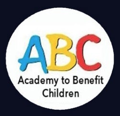
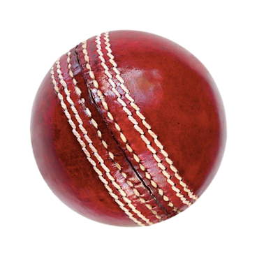

CRICKET CAMP - INFORMATION and T&C's
Shadwell CC run our cricket camp in association
with ABC Academy Ltd, who specialise in cricket
camps and developing cricket in schools and
communities. Lead coach (ECB qualified and DBS
cleared) is Tony Bowry - tbowry1976@gmail.com |
0797 671 0933
@ShadwellCC with:

The full address for the camp location is the
Shadwell ground – The Brandon Oval, Brandon
Crescent, Leeds, LS17 9JH.
What children need to bring (each day):
• A packed lunch. • A water bottle (refills
available). • Sun cream and a hat. • Suitable
clothing and shoes – tracksuit, shorts,
trainers etc. • A bat if you have one (no problem
if not!). • A bag to keep your belongings in.
• Hand sanitiser (optional)
Things parents need to know: • Sessions start
at 10am prompt and finish at 3pm (drop offs from
9.30am). • The club will provide limited orange
juice and biscuits each day for breaks. • Lunch
will be 12.30 to 1pm (or as specified by the lead
coach). • Please drive with care on the country
lane approach to our ground. Shadwell CC Contact
Details If you have any questions or would like
further information on anything please contact:
Junior Secretary & Club Safeguarding Officer:
Richard Vincent – 0797 089 15 59
General Terms and Conditions
1. Inclement weather – We generally do not cancel
our camp days due to bad weather and our coaches
will be on hand to look after your children unless
the weather is so extreme it is a genuine safety risk,
if this is the case refunds will be offered.
2. Bookings – Any bookings onto our camps are only
secured if paid for in advance and in full. We are
unable to reserve places and have a limit to the number
of bookings per day. Places on our camps are booked on
a first-come, first-served basis.
3. Cancellations – If you wish to cancel a booking, we
must be notified at least 7 days in advance of the date
booked, in order for you to receive a full refund. We
reserve the right to refuse refunds if we are notified
less than 7 days before you are due to attend a camp day.
4. Illness/Injury – In the event of your child being
ill or injured and missing camp for 2 or more days, we
can provide a 75% refund for days missed on receipt of
a doctor’s note.
5. Public Liability – Insurance is provided through
the hosting club and the ECB qualified coaches.
6. Exclusion– We reserve the right to exclude or refuse
any child prior to or during any course if, in our
opinion, the presence of that child is incompatible
with the well-being of others on the camp. We take
bullying and poor behaviour seriously and this will
be dealt with appropriately as soon as it is reported.
If we have to contact you to ask to collect your child
due to poor behaviour, we are not able to offer refunds
for any time/days missed from the camps.
7. First Aid/Medical - All our coaches are first aid
trained and are able to provide assistance should your
child require it. The emergency services will be called
if further assistance is required. Please ensure that any
special requirements or allergies are notified on the
booking form. Our coaches are unable to administer
medicines unless prescribed by a doctor.
8. Lost Property – We accept no responsibility for the
loss/damage of any items brought to our camps. A lost
property area is provided (kitchen), and children are
encouraged to always look after their equipment and items
for the duration.
9. Promotional Photography - We may take occasional
promotional photos of our camps, If you do not give
consent for your child to be included in any photography,
please indicate this to us in the information box when
you complete your booking.
10. We reserve the right to amend, alter or cancel camp
days in the event of low attendance or any other unforeseen
circumstances. In this event, you will be notified with
options of a refund or to move your booking to a different day.
email any questions or queries to:
enquiries@shadwellcc.org.uk
